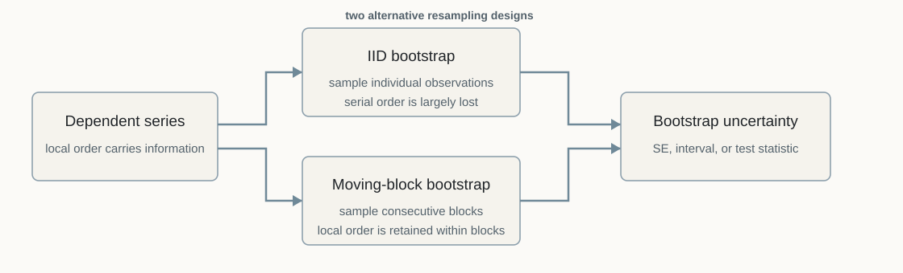
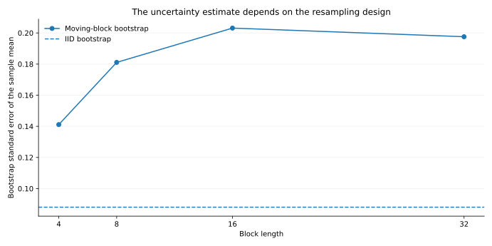

Block Bootstrap
Resampling dependent observations without pretending they are independent
QM006 · Statistical Inference · Intermediate
Core idea. When observations are serially dependent, resampling them one at a time can erase the dependence that drives sampling uncertainty. A block bootstrap resamples consecutive observations so that local time-series structure is retained within each sampled block.
Use it for. Bootstrap standard errors, confidence intervals, and test statistics when the statistic depends on a weakly dependent time series and an IID resampling scheme would be inappropriate.
It does not establish. That one block length is universally correct, that blocking fixes nonstationarity or structural breaks, or that every dependent-data problem should use the same bootstrap design.
The Question
An IID bootstrap is easy to describe: draw observations with replacement, recompute the statistic, and use the variation across bootstrap samples to measure uncertainty.
But suppose the data are a time series. Adjacent observations may be serially related. If we draw individual dates independently, we destroy that ordering and much of the local dependence it carries.
How can we resample a dependent series without throwing away the dependence we are trying to account for?
Block-bootstrap methods answer by resampling runs of consecutive observations rather than isolated points. Künsch’s classic treatment extends bootstrap and jackknife ideas to general stationary sequences by working with blocks, and later work develops several related time-series bootstrap designs (Künsch 1989; Bühlmann 2002).
Why It Matters
For independent observations, the variance of a sample mean depends on the variance of individual observations. For a dependent series, uncertainty also depends on the covariances across time.
For a stationary series with autocovariance \(\gamma_k\), the long-run variance entering the asymptotic variance of the sample mean is
\[ \Omega = \gamma_0 + 2\sum_{k=1}^\infty \gamma_k. \]
When nearby observations are positively correlated, the covariance terms can materially increase uncertainty. An IID bootstrap breaks the time ordering and therefore does not reproduce those serial covariances in its resampled series.
This issue appears well beyond sample means. Forecast-loss averages, regression statistics, portfolio-performance summaries, and other time-indexed estimators can all inherit dependence from the underlying sequence.

Intuition: Preserve Local Order
Consider observations
\[ X_1,X_2,\ldots,X_n. \]
An IID bootstrap sample might contain
\[ X_{17},X_{204},X_{3},X_{118},\ldots \]
with no attempt to preserve which observations were neighbors in the original series.
A moving-block bootstrap instead forms overlapping blocks of length \(\ell\):
\[ B_i=(X_i,X_{i+1},\ldots,X_{i+\ell-1}), \qquad i=1,\ldots,n-\ell+1. \]
It then draws these blocks with replacement, concatenates them, and trims the result to the desired sample length (Künsch 1989).
Within a sampled block, the original ordering is preserved. Dependence is still broken between sampled blocks, so block length controls how much local dependence is retained.
The Method: Moving Blocks
For a statistic \(T_n=T(X_1,\ldots,X_n)\), a simple moving-block bootstrap proceeds as follows:
- Choose a block length \(\ell\).
- Construct the \(n-\ell+1\) overlapping blocks of consecutive observations.
- Draw enough blocks with replacement to create at least \(n\) bootstrap observations.
- Concatenate the sampled blocks and truncate to length \(n\).
- Recompute \(T_n\) on the bootstrap sample.
- Repeat the process many times to approximate the sampling distribution of the statistic.
If \(T_n^{*(1)},\ldots,T_n^{*(B)}\) are the bootstrap replicates, a bootstrap standard error is
\[ \widehat{\operatorname{se}}_{boot}(T_n) = \sqrt{\frac{1}{B-1}\sum_{b=1}^B \left(T_n^{*(b)}-\overline{T_n^*}\right)^2}. \]
The exact inferential construction depends on the statistic and bootstrap variant. A block bootstrap is a resampling framework, not a guarantee that every percentile interval or test is automatically well calibrated.
Block Length Is a Tuning Choice
A block that is too short may preserve too little dependence. A very long block preserves more local structure but leaves fewer effectively distinct blocks and can increase finite-sample instability.
This is why block length should be treated as part of the inferential design rather than as a cosmetic setting. Hall, Horowitz, and Jing show that optimal block-length rates depend on the inferential target, so there is no single universal choice that is optimal for every problem (Hall et al. 1995).
Sensitivity to defensible block lengths can be informative. Selecting the block length because it produces the desired p-value, confidence interval, or surviving model set turns a tuning choice into a hidden result-selection step.
Other Block-Based Designs
The moving-block bootstrap is not the only way to resample dependent data. The stationary bootstrap of Politis and Romano uses random block lengths and was designed to generate a stationary bootstrap series under weak dependence (Politis and Romano 1994). Circular blocks and other variants address different boundary or implementation considerations.
The right design depends on the statistic, dependence structure, sample size, and inferential goal. This article uses moving blocks because the construction is transparent and directly connected to the resampling used in QM005’s Model Confidence Set illustration.
Worked Illustration: Positive Serial Dependence
The example uses one synthetic AR(1) series with coefficient \(0.75\) and 300 observations. It is designed to show what IID resampling destroys when dependence is positive. The numerical gap between bootstrap methods is specific to this synthetic draw.
The generated series has sample lag-1 autocorrelation
\[ \widehat{\rho}_1=0.750. \]
We estimate the uncertainty of the sample mean with 999 fixed bootstrap draws. The IID bootstrap samples individual observations. The moving-block bootstrap samples overlapping blocks, with the baseline comparison using block length 16.
| Resampling design | Block length | Bootstrap SE of mean | Mean lag-1 ACF across resamples |
|---|---|---|---|
| IID bootstrap | — | 0.088 | -0.002 |
| Moving-block bootstrap | 4 | 0.141 | 0.560 |
| Moving-block bootstrap | 8 | 0.181 | 0.654 |
| Moving-block bootstrap | 16 | 0.203 | 0.698 |
| Moving-block bootstrap | 32 | 0.198 | 0.713 |
The IID bootstrap almost eliminates the lag-1 dependence in its resamples, while the moving-block samples retain much more of it. In this positive-dependence illustration, the block designs consequently produce substantially larger standard-error estimates than IID resampling.
Because this is a synthetic example, the data-generating parameters are known. They imply a large-sample standard error of about 0.231 for the sample mean. In ordinary empirical work that benchmark is unavailable; it is shown here only to make the role of positive serial dependence more concrete.

Hands-on Lab: Change the Block Length
The optional lab reproduces the baseline comparison and lets you switch among block lengths 4, 8, 16, and 32.
Run it yourself. Start with the lab guide. For a self-contained copy, use the complete lab bundle. Direct source: Python · R.
python labs/python/qm006_hands_on.py
python labs/python/qm006_hands_on.py --block-length 4
python labs/python/qm006_hands_on.py --block-length 32Do not expect the estimated standard error to move monotonically with block length. The point of the exercise is that block length changes how much of the series’ dependence is carried into the resamples, so it is part of the inferential design.
Implementation Pattern
A transparent moving-block implementation has the following shape:
blocks = make_overlapping_blocks(series, block_length)
bootstrap_statistics = []
for _ in range(n_bootstrap):
sampled_blocks = sample_blocks_with_replacement(blocks)
bootstrap_series = concatenate(sampled_blocks)[:len(series)]
bootstrap_statistics.append(statistic(bootstrap_series))
standard_error = sd(bootstrap_statistics)The pseudocode is schematic rather than a drop-in implementation. In applied work, document the block definition, boundary treatment, block length, number of resamples, statistic, and any centering or studentization used by the inferential procedure.
How to Interpret the Result
A block-bootstrap result should be read conditionally on the resampling design.
A wider interval or larger standard error than the IID bootstrap does not mean the block bootstrap is automatically “more conservative.” In the worked example, positive serial dependence makes the IID bootstrap discard covariance that contributes positively to uncertainty. With other dependence structures or other statistics, the direction of the difference need not be the same.
The method answers a design-specific question:
What uncertainty is implied when the resampling scheme preserves dependence over the chosen block scale?
Common Mistakes
1. Applying an IID bootstrap to a serially dependent statistic
If the statistic’s sampling variation depends on serial covariance, drawing dates independently can reproduce the marginal distribution while missing the dependence that matters for inference.
2. Treating block length as a universal constant
A block length that works reasonably for one statistic, frequency, or sample size need not be appropriate for another. The inferential target matters (Hall et al. 1995).
3. Choosing the block length after looking at the desired conclusion
Block-length sensitivity is legitimate. Result-driven tuning is not. Report the main design and, when material, show whether conclusions survive a defensible range of alternatives.
4. Assuming blocking fixes nonstationarity
The classical moving-block logic is built for stationary or suitably weakly dependent settings (Künsch 1989; Bühlmann 2002). Structural breaks, strong trends, changing volatility, or other forms of nonstationarity may require a different design rather than longer blocks.
6. Reporting “bootstrap” without the design
The label is incomplete. State whether the procedure uses IID, moving blocks, stationary blocks, or another design, and report the block length or its selection rule when relevant.
A Practical Reporting Checklist
| Item | What to report |
|---|---|
| Statistic | What quantity is being resampled? |
| Data structure | Why is serial dependence relevant? |
| Bootstrap design | Moving block, stationary bootstrap, or another method? |
| Block length | What value or selection rule is used? |
| Number of draws | How many bootstrap replicates? |
| Joint resampling | Are related series resampled on the same time indices? |
| Interval/test construction | Standard error, percentile interval, studentized statistic, or another procedure? |
| Sensitivity | Do conclusions materially change across defensible block choices? |
When Not to Use It
A basic moving-block bootstrap is not automatically appropriate when:
- observations are genuinely independent and blocking adds unnecessary complexity;
- the series has substantial nonstationarity that the resampling design does not address;
- the statistic depends on features that blocks of the chosen form do not preserve;
- the sample is so short that meaningful block resampling leaves very few distinct blocks; or
- a model-based bootstrap, subsampling method, or another dependence-aware procedure better matches the inferential problem.
Reproducibility
The accompanying materials include the synthetic series, resampling inputs, code, figures, and a hands-on lab in Python and R. The lab lets readers compare IID and moving-block resampling and vary the block length used in the illustration.